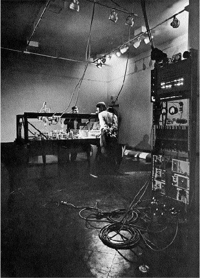

Demonstrations - Personal Computer - New Media Art
“Visitors were invited to do something extremely stranger: operate computers2”
“The exhibit introduced artists to an important dimension of computing”
“The exhibition wasn’t about getting artists and technologists together,
or about using new technologies for artistic purposes. Burnham wrote in the
catalog that, rather, “the goal of Software is to focus our sensibilities
on the fastest growing area in this culture: information processing
systems and their devices. “
“The focus was generally on a finished product produced with computer tools”
“The show caused a financial crisis for the museum(...)”
“Demonstrations have had an important, perhaps even central, place in new
media innovation.”
“They took the risk because they believed in the power of the system they were
planning to show, and thought only a live demonstration could convince
the computing mainstream of the importance of their research.”
“This paper describes a multisponsor research center at Stanford Research Institute
in man-computer interaction.“
“In the Augmented Human Intellect (AHI) Research Center at Stanford Research Institute
a group of researchers is developing an experimental laboratory around an interactive,
multi-console computer-display system, and is working to learn the principles by which
interactive computer aids can augment their intellectual capability.”
“The research objective is to develop principles and techniques for designing
an “augmentation system””
The Fall Joint Computer Conference, which took place in 1968, which set Douglas Engelbart on stage
to talk about computer demonstrations as well as research carried out at the Augmented Research
Center (ARC), links easily with the Software exhibition. , Which took place in 1970, and was created
by Jack Burnham, who put his visitors in interaction with computers. The demonstrations mentioned
by Engelbart are represented here through the public interaction with the machines.